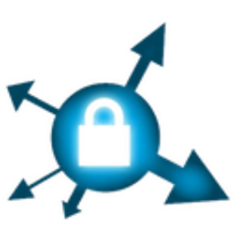

NoSript:
Ermoeglicht die Sperrung von
JavaScript-Skripten auf Webseiten. JavaScript ist eines der groeßten
Einfallstore fuer Viren. Ferner unterbindet NoScipt cross site
scripting, kurz XSS, cross-zone DNS rebinding / CSRF Attacken.
Bewertung: nach der Installation von NoScript benoetigt es einen
Mehraufwand, um alle notwendigen JavaScripts zu aktivieren. In meinem
Fall war dies nach ca. 1 Woche surfen erledigt. Unserer Meinung nach
sollte NoScript in keinem Browser fehlen, da es die Sicherheit des
Users stark erhöht.
Ghostery:
blockiert den Tracking Code des Users, um das Tracking von Anzeigen zu verhindern.
Die Firma Evidon, welche hinter dem Plug In steht, sammelt und
verkauft Daten selbst.
Quelle
 HTTPS Everywhere:
Aendert unsichere HTTP-Requests zu HTTPS-Requests. Eine sichere Verbindung ist
hierdurch nicht garantiert, da die unterstuetzten
Verschluesselungsalgorithmen vom Server abhaengen. Wenn dieser bspw.
kein AES anbietet, kann dieser auch nicht verwendet werden.
Bewertung: dieses Plug-In sollte in jedem Firefox installiert sein,
da es oftmals eine verschluesselte Kommunikation erlaubt.
Google Analytics Opt-out Browser Add on:
Dem Google Analytics Javascript wird untersagt, Daten an Google zu senden.
Bewertung: ist i.d.R. mit NoScript ueberfluessig, falls man bei einer
Website aber das Google Analytics-JavaScript aktivieren muss, damit
die Seite funktioniert, greift dieses Plugin.
Privacy Badger:
Ein Projekt, wie HTTPS Everywhere von der EFF, das Tracking von Websiten verhindert.
Man kann pro Domain, die von der besuchten Website aufgerufen wird,
zwischen drei Modi auswaehlen: - rot, hier die trackende Domain
geblockt - gelb, hier wird nur das senden von Cookies an Domains
unterbunden - gruen, hier wird nichts blockiert
uBlock-origin:
uBlock ist ein Add-on für Inhaltsfilterung, welches einen Ad-Blocker integriert.
uBlock orign zeichnet sich unteranderm durch eine sehr geringe Speichernutzung im vergleich zu andern Populären Browser Add-ons.
Zudem können Remote Schriftarten verboten werden, was vor einem BufferOverflow schützen kann
Außerdem könen Pop-ups und Große Medien Blockiert werden,